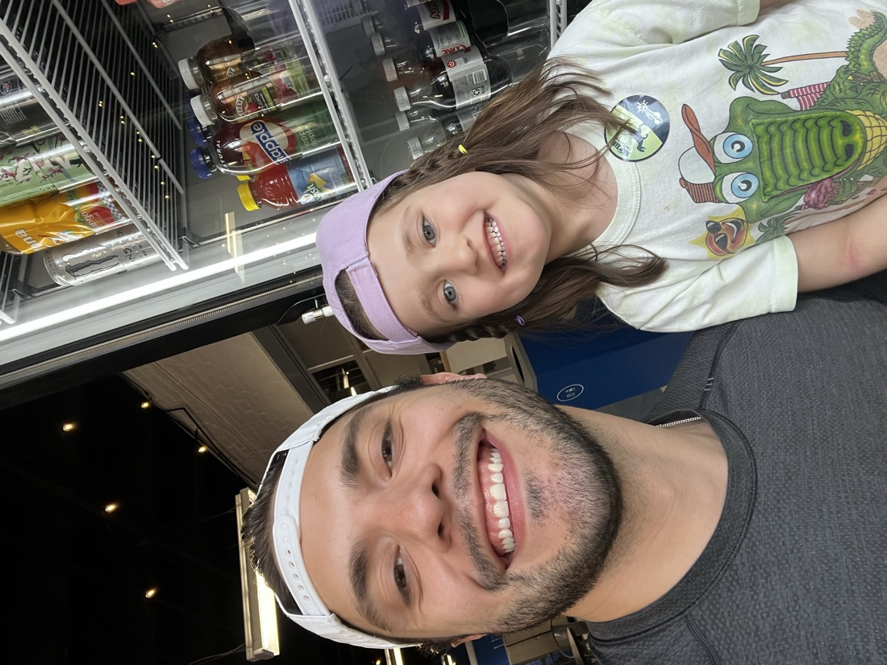
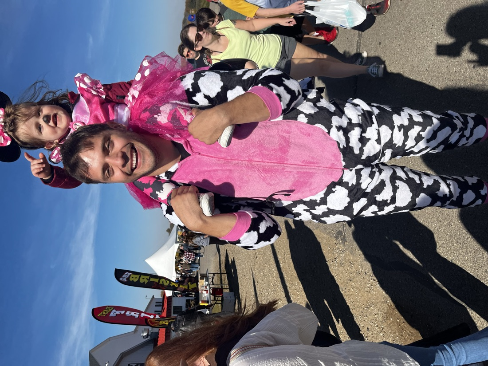
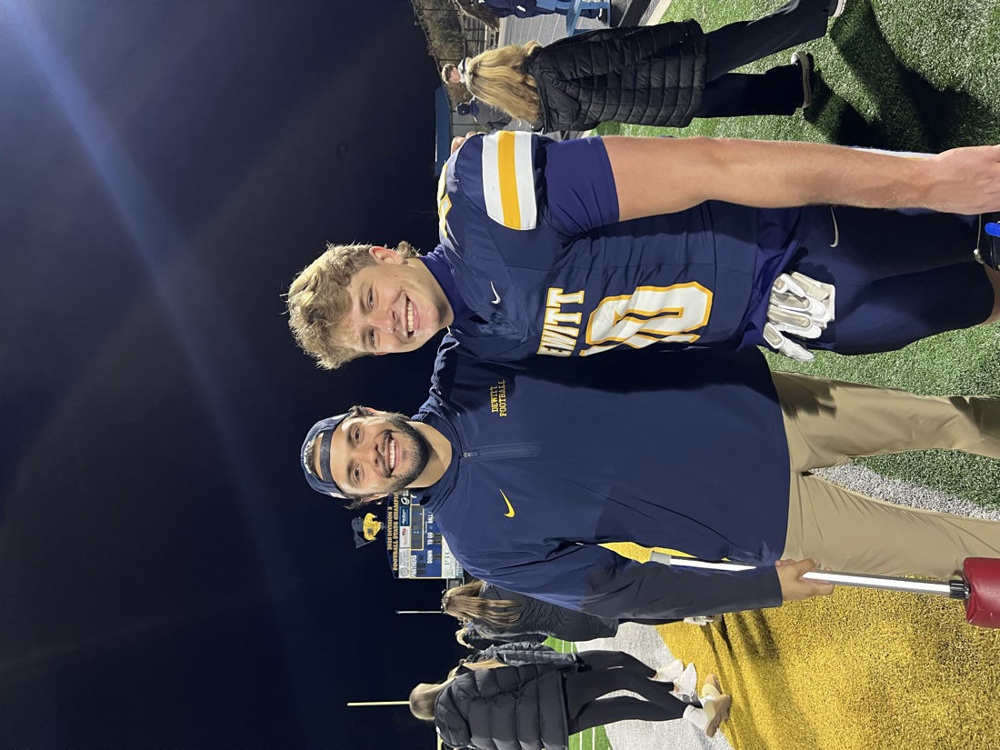
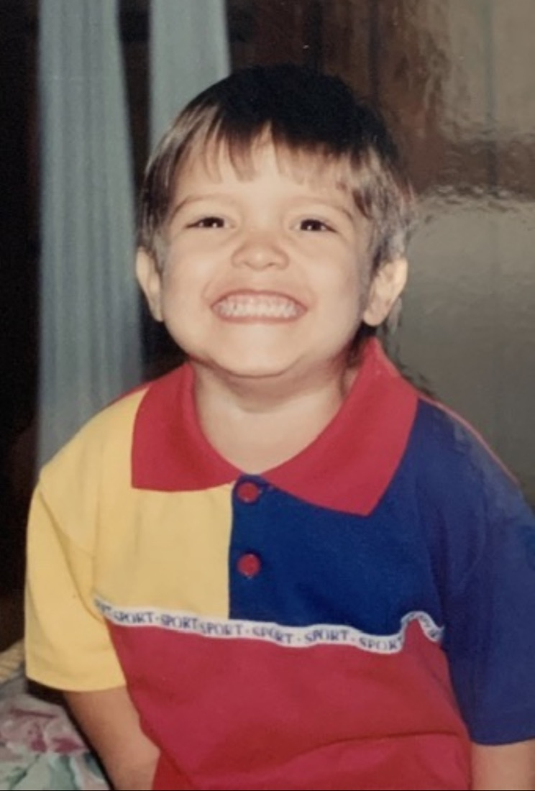
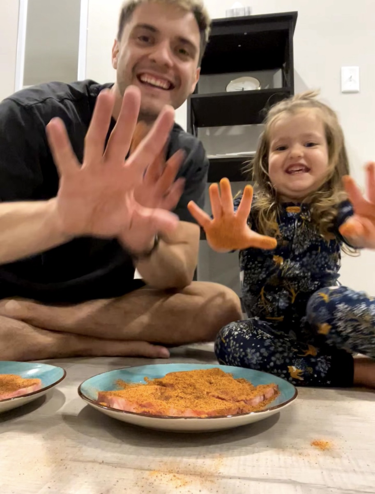
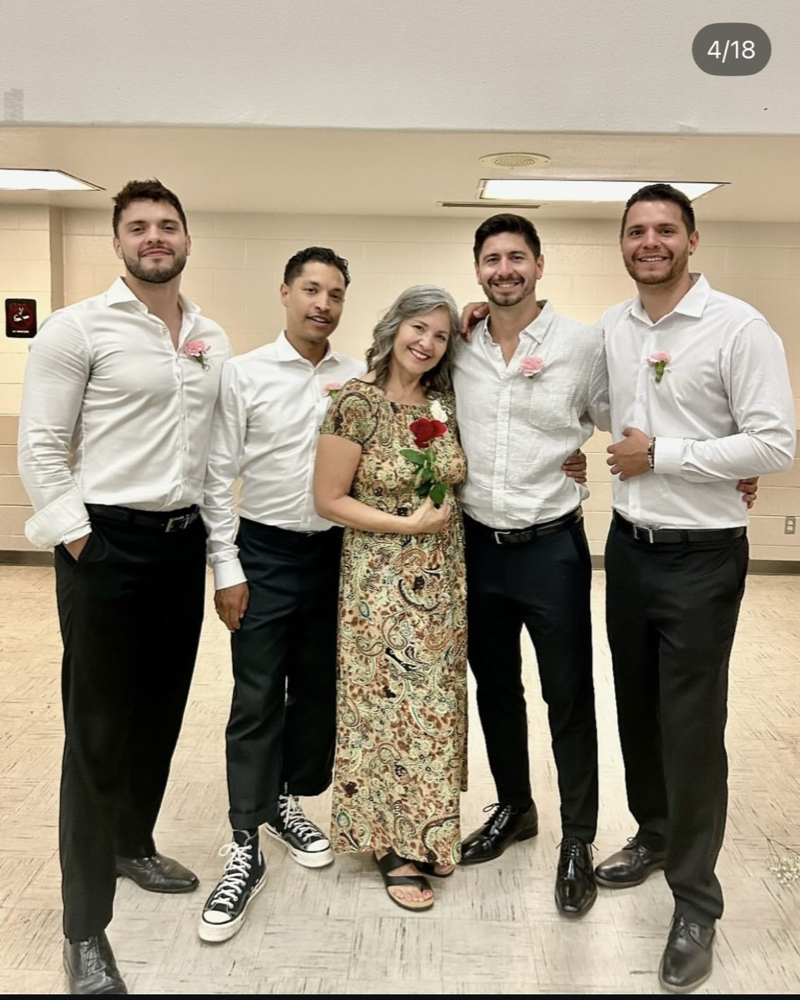
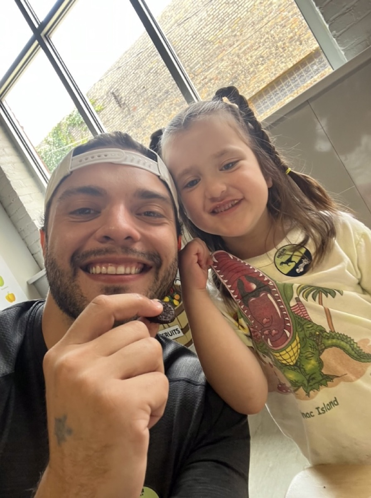
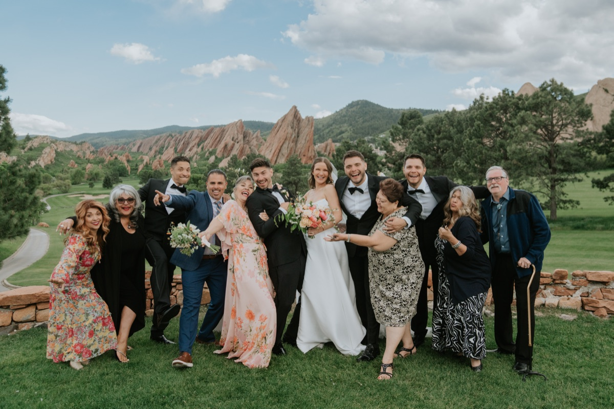
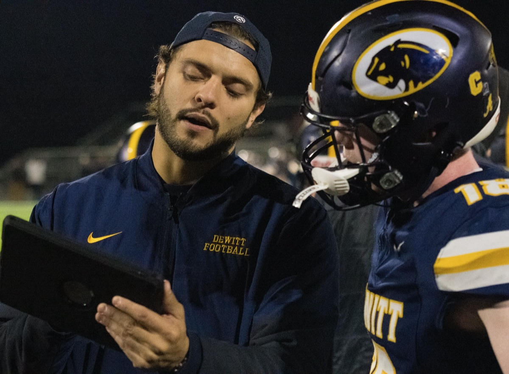

A brand isn't what you say it is.
It's what they say it is.
So I'll let the people who know me best tell you who I am.
What does the research say about me?
Personality tests are a little silly. They're also, in my case, dead-on. Three different ones, same verdict.
Myers-Briggs. "The Campaigner": an enthusiastic, creative, sociable free spirit who can always find a reason to connect with someone.
Enneagram. "The Charmer": an ambitious achiever with a Two's warmth, driven to win people over and bring them along.
CliftonStrengths Top 5, by Gallup. In one line: a connector who gets things done.
Wins people over and loves doing it.
Spots the patterns others miss.
Endless stamina for getting it done.
Core values that don't move.
Fascinated by ideas and connections.
What do my colleagues say about me?
"Zac is an incredibly creative and strategic brand marketer, with a (heaping) side of passion for the food industry. Not to mention that he's just a lot of fun to work with, a dream teammate."
"Zac is a marketing unicorn and a truly one-of-a-kind human who has the ability to connect with others and make them feel seen and understood."
"Zac is one of the best. No drama, just thoughtful work done well and an attitude that lifts up the whole team. I would work with him again in a heartbeat."
"Thoughtful, inquisitive, creative, and unfailingly kind, Zac is one of my favorite people. He does outstanding work because he pours his heart into it. He's one of a kind and a joy to be around, let alone work with."
"From the moment I met him I knew he'd be something special, and I was right. He was the definition of a true team player, always lifting people up around him. Zac is going to do big things in this world."
"Zac's upbeat and can-do attitude made him a perfect collaborator between the sales, CSM, and product teams. Strategic and creative. I enjoyed Zac's fresh perspectives."
All real, all on my LinkedIn. Read them in full there.
What do my friends and family say about me?
I asked 20 of the people who know me closest for the three words they'd use to describe me. My mom, my coach, my brother, my closest friends, my harshest critics. Four words came back again and again.
Three different tests. Twenty different friends. Same verdict: a connector who gets things done.
So the only thing missing is what you think about me.
A few more sides of me.










